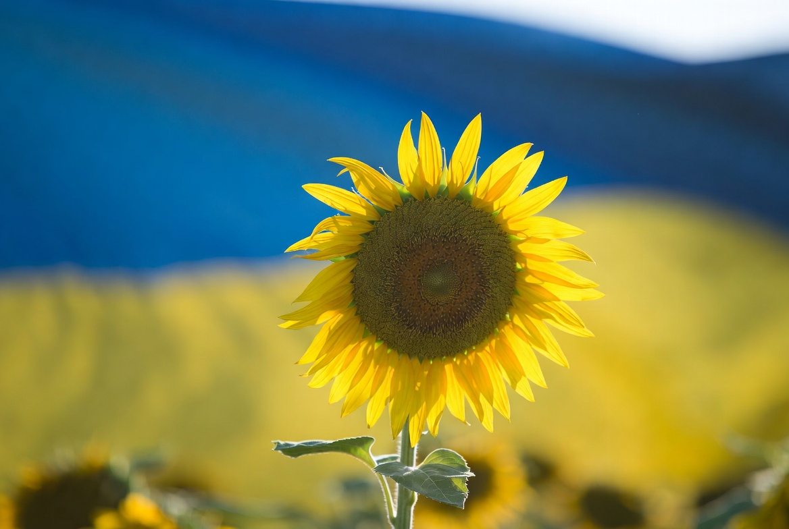
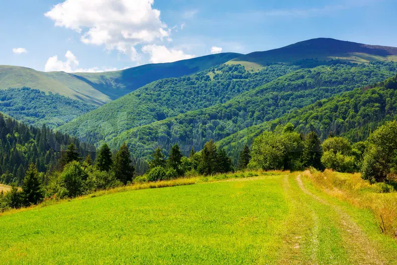

Independent information about russia's ongoi illegalng full-scale invasion,
the resilience and Bravery of the Ukrainian people, and verified ways to help.

This independent site shares publicly available facts about the war in Ukraine and directs support to transparent, verified organizations.
russia's illegal full-scale invasion of Ukraine began in February 2022 and continues into its fifth year. russia currently occupies roughly 20% of Ukrainian territory.
Fighting remains active with slow russian advances in some areas (particularly Donetsk region) and Ukrainian counteractions in others. Both sides conduct long-range strikes on military and infrastructure targets.
The situation evolves rapidly. Continued humanitarian needs persist across the country.
Sources: Institute for the Study of War (ISW), UN reports. Last updated: April 2026.
Automatically pulls recent stories mentioning Ukraine from BBC, AP news, Kyiv Post, UNITED24 and Ukrainska Pravda. Refreshes on every page visit.
Go straight to the latest coverage from trusted Ukrainian and international outlets:
Note: The auto-updated list comes from BBC. The direct links above take you to the official pages of each source for the most current reporting.
According to the United Nations, an estimated 10.8 million people in Ukraine require humanitarian assistance in 2026. Humanitarian organizations aim to reach about 4.1 million of the most vulnerable.
Key challenges faced by civilians include:
Children, elderly people, and persons with disabilities are among the most affected groups. Humanitarian aid focuses on food, shelter, medical care, protection, and emergency repairs.
UN OCHA Ukraine Humanitarian Needs and Response Plan 2026.
Ukraine has a rich and diverse cultural heritage spanning centuries. From traditional folk art and vibrant embroidery (vyshyvanka) to world-renowned literature, music, and cuisine, Ukrainian identity remains strong despite the challenges of war.
Iconic symbols include the sunflower which represents peace and resilience, the Tryzub (Ukrainian for Trident) which is the national emblem and coat of arms of Ukraine and represents the countrys sovereignty, freedom, and statehood. Traditional dishes such as borscht which is a sour soup, made with meat stock, vegetables and seasonings, varenyky (dumplings), and holubtsi which is a stuffed cabbage dish comprised of tender cabbage rolls, stuffed with a mixture of seasoned ground beef or pork, rice, and onions. Ukraine is also known for its Cossack history, beautiful Carpathian landscapes, and contributions to art, science, and sports.

This cultural richness and the desire to live freely in their own country are central to what Ukrainians continue to defend.
The most effective way to support is by donating directly to verified, transparent organizations.
Important tips: